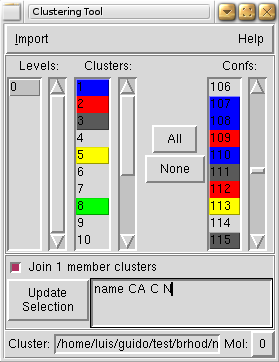

Description
Features include:
- Import results from:
- NMRCLUSTER (link doesn't work anymore).
- Xcluster.
- R hierarchical clustering.
- Gromacs clustering utility g_cluster.
- Charmm clustering command.
- Color conformations by cluster.
- Selection of clusters and/or conformations to display.
- Multiple levels of clustering.
- Custom representation.
- Join single member clusters in a separate cluster.


Manual
To use the Cluster plugin you need to:
- Load a trajectory of the conformations used for clustering into VMD.
- Define the atom selection and molecule to use as representation in vmd.
- Generate the clusters with one of the following external utilities and Import the results into the plugin:
- NMRCLUSTER: import the "Cluster.log" file. Only a level (0) will be available. Outliers will be splitted in different clusters. Use the Join 1 member clusters to cluster them together.
- Xcluster: import the ".clg" file. All levels of interest must be saved in order to display them in VMD (look in the Xcluster manual for the Writecls command).
- R:
- Obtain the rmsd between structures. You can use the iTrajComp plugin for and easy way of doing this (I suggest writing the results in matrix format).
- Load the data into R and use one of the available functions in R to do hierarchical clustering (hclust, agnes, diana, ...). If you used the iTrajComp plugin to create the rmsd matrix, the following should work in R (see the documentation of the individual commands for further options):
data = scan('/path/to/rmsd.mat') rmsd = matrix(data, nrow=sqrt(length(data)), ncol=sqrt(length(data))) library(cluster) cluster = agnes(rmsd, diss=T) - Cut the tree into groups (levels) using cutree. You can cut into one or more groupings. For example
levels = cutree(cluster, k=2:5)
will output the cluster membership of each object for levels 2 to 5. - Write the results to a file to input into the Cluster plugin:
write.table(levels, file='levels.dat', quote=F)
- Import the file into the Cluster plugin.
- Gromacs (g_cluster): import the "cluster.log" file. Only a level (0) will be available. g_cluster timesteps are automatically mapped into VMD frames. Thanks to Andrea Carotti for all his help with the testing.
- Charmm: import the output membership file file.
- Managing the GUI:
- Select the level you want to see. The list of clusters will be updated together with the colors of the conformations. All clusters will be displayed when you change the level.
- Select/Deselect clusters to activate/deactivate them.
- Select/Deselect conformations to activate/deactivate individual conformations.
- All and None turn on/off all the clusters and conformations.
- Activate Join 1 member clusters to display all single member clusters in a separate cluster (outl).
- The atom selection to represent can be changed in the atom selection box. Click the Update Selection button to apply the changes.
Download
1.7 (26 Feb'08)
Change log:
- Add support for cluster output from Gromacs utility g_cluster.
- Fix colors when doing multiple imports.
- Fix display of the 'outl' cluster.
1.6 (13 Aug'07)
Change log:
- Added support for cluster output from R.
- 'Join 1 member' clusters works interactively (not just on import).
- Upgraded number of colors to the vmd maximum.
1.5 (6 Apr'05)
Note: Remember to change pkgIndex.tcl and the .vmdrc to reflect the change (see Installation notes).
Change log:
- Namespace changed from CLUSTER to clustering. There was a clash with another plugin new in VMD 1.8.3.
1.4 (18 Jan'05)
Change log:
- Solved bug with colors when using more than 17 clusters.
- Finished option to join cluster of 1 member together in cluster "outliers" (outl).
- Selection of molecule recovered.
- Parsing of Xcluster .clg file simplified.
- Added button to change atom selection.
1.3 (18 Jan'05)
Change log:
- Added support for Xcluster:
- Added new listbox with levels of clustering. Added another dimension to cluster.
- Added Options frame with:
- Atom selection for the representations.
- Starting to add option to join cluster of 1 member together, although is not activated yet.
- Minimized number of representations. Now each representation holds one cluster instead of one conformation.
1.2 (17 Aug'04)
Initial version.
Installation
A small guide on how to install third party VMD plugins can be found here. In summary:
set auto_path [linsert $auto_path 0 {/path/to/plugins/directory}]
vmd_install_extension clustering clustering "WMC PhysBio/Cluster"
The Cluster plugin should be accessible from the Extensions menu.